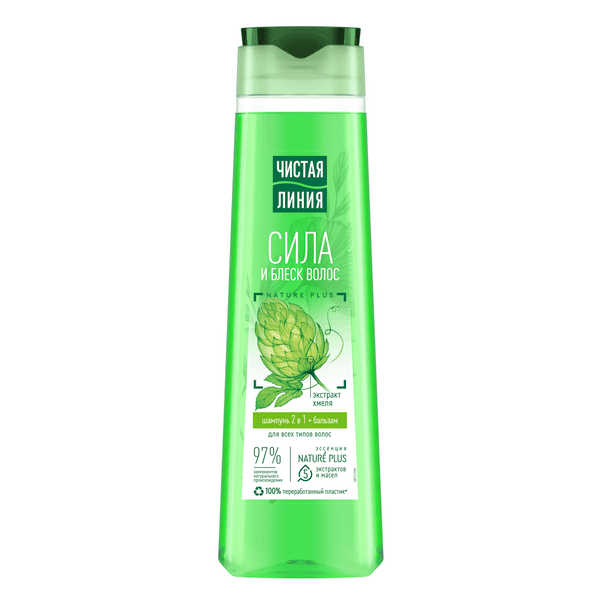

Шампунь-бальзам 2 в 1 сила и блеск для всех типов волос с экстрактом хмеля 400 мл
Преимущества
Сила и блеск волос.
Репейное масло
Хмель против выпадения.
2 в 1.
Без силиконов.
С заботой о природе.

Встречайте шампунь от Чистой Линии с усиленной формулой1 и в обновленном дизайне! Эксперты бренда Чистая Линия разработали шампунь 2 в 1, который сочетает в себе мягкое очищение шампуня и уход кондиционера для волос. Продукт на 97% состоит из компонентов натурального происхождения2 и подходит для всех типов волос. Новая формула шампуня содержит эссенцию Nature Plus из 5-и экстрактов и масел. Активные натуральные компоненты предупреждают выпадение, питают и защищают волосы от повреждений: Экстракт вербены обладает успокаивающим, общеукрепляющим действием. Шалфей способствует питанию кожи головы, укреплению и росту волос*. Экстракт шиповника, богатый витаминами и известный своими восстанавливающими свойствами, стимулирует рост волос*. Масло льна питает, смягчает кожу и волосы. Миндальное масло восстанавливает секрецию и придает здоровый блеск. Экстракт хмеля и репейное масло питают корни волос, способствуют их росту*. Бальзам в составе облегчает расчесывание, смягчает и придает блеск. Результат – естественно красивые, крепкие и блестящие волосы. Свойства продукта подтверждены потребительским тестированием3: 94% респондентов отметили, что шампунь смягчает волосы, 84% – шампунь делает волосы блестящими, 89% – шампунь облегчает расчесывание волос. 0% выбрасываемых производственных отходов’. 100% переработанный пластик’’. Продукт не тестируется на животных. Мы берем лучшее от природы, чтобы позаботиться о вашей красоте, и верим, что о природе нужно заботиться так же, как о себе. Вы с нами? Узнайте больше на chistaya-linia.ru. * В сочетании с ингредиентами шампуня. Питание в пределах кутикулы волоса и рогового слоя кожи, предупреждает выпадение волос по причине ломкости. 1 По сравнению с предыдущим поколением средств Чистая Линия. 2 Компоненты натурального происхождения отмечены в составе на упаковке. 3 Потребительское тестирование при участии 100 респондентов, min 75% согласившихся, РФ, 2019. [‘] Все производственные отходы ООО Юнилевер Русь утилизируются способами, отличными от передачи на полигон. [‘‘] В корпусе флакона шампуня.
Небольшое количество нанесите на влажные волосы, вспеньте, смойте водой.
Все права защищены